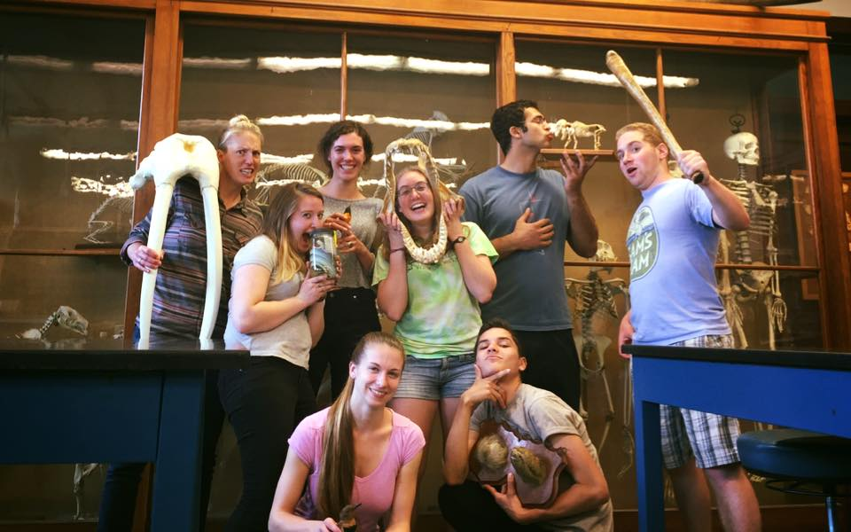
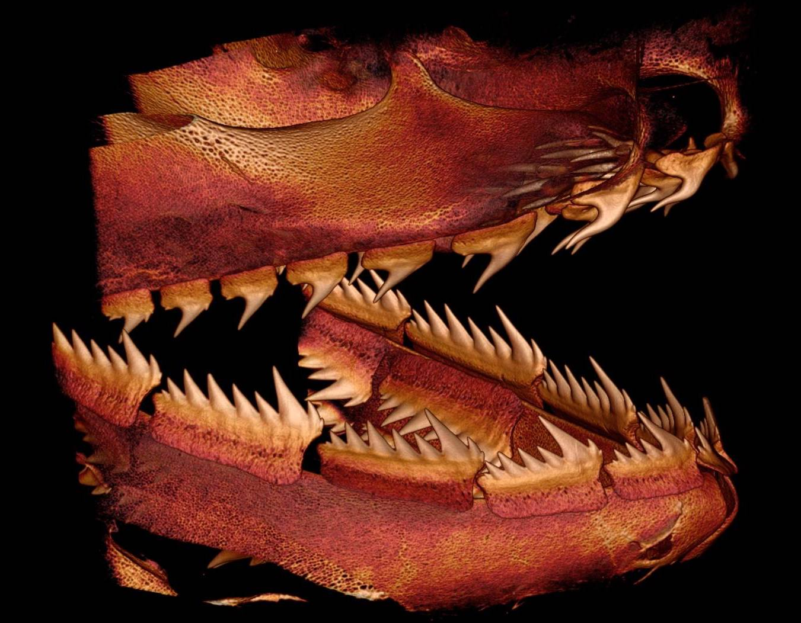

Research
EVE 198: Biodiversity of Fishes: Methods and Experimental Design in Macroevolution
Course instructor (3 quarters: 2017-2018)
UC Davis
Through an NSF-funded grant by Peter Wainwright & Samantha Price, I co-taught three quarters of a course series in a yearlong course series. We brought 17 undergraduates through the entirety of the research process, from hypothesis development, methodology, and presentation of their projects at the UC Davis Undergraduate Research Symposium. I developed curriculum, organized projects, and wrote & led lectures.
In recent work, with Chris Martinez and Peter Wainwright, I used landmark morphometrics to quantify cranial kinesis as a trajectory of skull shape change during the feeding strike from the initial closed mouth to maximum gape. We found evidence for reduced kinesis in fishes that rely on biting and that among suction feeders, prey type may affect evolution of skull mobility.
 I have spent parts of two summers in the fish collections at the Smithsonian Institution with a joint team out of the Wainwright Lab (UC Davis) and the Price Lab (Clemson University) collecting body shape data on 6,000 species of teleost fishes through an NSF-funded project. This project has included a team of over 20 undergraduates, four senior personnel, and two faculty members, and over 16,000 specimens. Stay tuned as we explore the dataset in the coming year!
I have spent parts of two summers in the fish collections at the Smithsonian Institution with a joint team out of the Wainwright Lab (UC Davis) and the Price Lab (Clemson University) collecting body shape data on 6,000 species of teleost fishes through an NSF-funded project. This project has included a team of over 20 undergraduates, four senior personnel, and two faculty members, and over 16,000 specimens. Stay tuned as we explore the dataset in the coming year!
 Adam Summers, Alice Gibb, Stacy Farina, and I studied the effect of size on burial success in flatfishes. We wanted to know how their ability to bury in the sand changes as the fish grows, and we used high speed video and photography to quantify burial performance. Our results suggest that both body size and substrate grain size can potentially limit the ability of flatfishes to bury: a very large fish (>150 cm) may move too slowly to fluidize all but the smallest substrate particles and some particles are simply too large for smaller individuals to fluidize. This paper was just published in Journal of Experimental Biology: read it here!
Adam Summers, Alice Gibb, Stacy Farina, and I studied the effect of size on burial success in flatfishes. We wanted to know how their ability to bury in the sand changes as the fish grows, and we used high speed video and photography to quantify burial performance. Our results suggest that both body size and substrate grain size can potentially limit the ability of flatfishes to bury: a very large fish (>150 cm) may move too slowly to fluidize all but the smallest substrate particles and some particles are simply too large for smaller individuals to fluidize. This paper was just published in Journal of Experimental Biology: read it here!
 In my work on shark teeth, I explored structure, function, and evolution of shark teeth in two separate project. At Cornell, Willy Bemis and I explored tooth morphology and development in sixgill and sevengill sharks. These sharks exhibit single-file tooth replacement, in which lost teeth are replaced without regard to the wear or loss status of adjacent tooth files. Their unique multicusped tooth morphology makes them a fascinating study system. In my work at Friday Harbor Labs, Adam Summers, Stacy Farina, Jeff Brash, and I designed and built a dynamic testing device to test shark tooth performance under loading conditions experienced by prey. We found that variation in tooth shape affected cutting ability of teeth, and that there is likely a tradeoff between sharpness and longevity in shark teeth. Our paper was published in Royal Society Open Science: check it out!
Course instructor (3 quarters: 2017-2018)
UC Davis
Through an NSF-funded grant by Peter Wainwright & Samantha Price, I co-taught three quarters of a course series in a yearlong course series. We brought 17 undergraduates through the entirety of the research process, from hypothesis development, methodology, and presentation of their projects at the UC Davis Undergraduate Research Symposium. I developed curriculum, organized projects, and wrote & led lectures.
- © Untitled
- Design: HTML5 UP